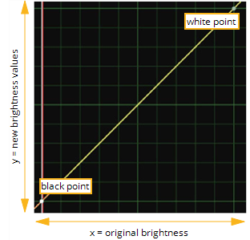
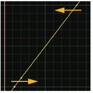
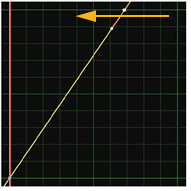
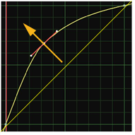
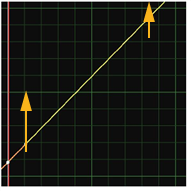
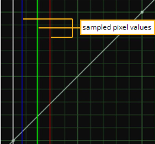

If you prefer to work with color curves, you can use the ColorLookup node to make contrast, gamma, gain, and offset adjustments (and, in fact, many others). Color curves refer to line graphs of a given color channel’s brightness. The horizontal axis represents the channel’s original, or input, values, and the vertical axis represents the channel’s new, or output values.

As Figure shows, you can edit the ColorLookup node’s color curves to make all of the types of corrections that are possible through the ColorCorrect node - and you can generally make these corrections with more flexibility and precision than is possible with sliders.
|  |  |
| Corrections through the ColorLookup node’s color curves: Contrast boost. |
Corrections through the ColorLookup node’s color curves: Gain boost. |
|  |  |
| Corrections through the ColorLookup node’s color curves: Gamma boost. |
Corrections through the ColorLookup node’s color curves: Offset boost. |
| 1. | Click Color > ColorLookup to insert a ColorLookup node at the appropriate place in your script. |
| 2. | Connect a Viewer to the output of the ColorLookup node so you can see the effect of your changes. |
| 3. | In the ColorLookup properties panel, click red, green, blue, or alpha if you want to limit the subsequent operations to a particular channel. |
You can select multiple curves in order to edit one curve with reference to another. Otherwise, select the master curve (which represents all channels).
| 4. | To speed up the color calculation, the ColorLookup node uses a precomputed lookup table between 0 and the value specified in the range field. You can adjust the range value, or uncheck the use precomputed table box if necessary to tell ColorLookup to not use a precomputed table. |
| 5. | In the Viewer, drag the cursor over the pixels you want to sample for the correction. In the ColorLookup properties panel, press Ctrl+Alt (Cmd+Alt on a Mac) while clicking on the curve to set points at the places where the red, green, and blue lines intersect with the color curve. |
|
 |
| Viewing values from a sampled color. |
| 6. | Edit the position of the points and adjust the tangent handles to adjust the curve shape for the color correction. |
As an alternative to steps 4 and 5, you can use the source control to pick a source color for adding points. Then, use target to pick a destination color. Finally, do one of the following:
• Click Set RGB to add points on the red, green, and blue curves, mapping source to target.
• Click Set RGBA to add points on the red, green, blue, and alpha curves, mapping source to target.
• Click Set A to add points on the alpha curve, mapping source to target.
You can use these controls to match shadow, midtone, and highlights on two plates, for example. Set source to shadow rgb in one, target to shadow rgb in the other, then press Set RGB. Same for midtone and highlight areas.
|
|